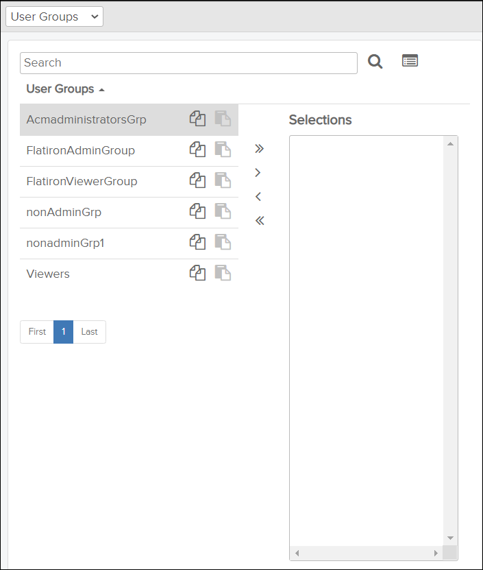
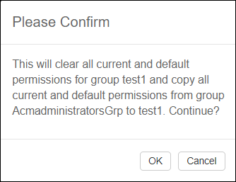

To manage function privileges and data access permissions, do these steps:
-
Click the
 Privileges icon on the header bar.
The Privileges page opens:
Privileges icon on the header bar.
The Privileges page opens:
Privileges Page Example
- Optional:
To reduce the number of items in the list, type a full or partial item name in
the left-side pane Search field and click the
 search icon.
search icon.
-
From the left-side pane, do one of these choices:
- To select a single item, locate and select it.
- If you selected User Groups or
Organizations and you want to select multiple
items.,click the
 Select multiple icon. The Selections box appears.Select multiple items by clicking them and using the arrow icons to move the selected items to the Selections box:
Select multiple icon. The Selections box appears.Select multiple items by clicking them and using the arrow icons to move the selected items to the Selections box:
Selections Box Example
- Click the add all arrows icon
to add all items for the page to the
Selections box.Note: You must do this for each page of items.
- Select an item and click the add arrow icon to add the item to the Selections box.
- Select an item and click the remove arrow icon to remove the item from the Selections box.
- Click the remove all arrows icon to remove all items from the Selections box.
- Click the add all arrows icon
to add all items for the page to the
Selections box.
- Optional:
To copy/paste permissions between items:
- Select the item to copy permissions from and click the
 Copy icon.
Copy icon. - Select the item to paste permissions to and click the
 Paste icon.
Paste icon.A confirmation message appears.

Click the OK button to paste the copied permissions. This will overwrite all permissions previously set for the selected item.
- Select the item to copy permissions from and click the
- Optional:
To reduce the number of nodes in the Privileges tree, do
any or multiple of these filtering options:
- Type a full or partial node name in the Privileges
pane Search field and click the search icon.
- From the Show contexts drop-down menu, select a specific product.
- From the Show drop-down menu, select the
permission you want to filter on:
- Show all – This is the default option.
- Show Read permissions – For example, this option is useful for showing only data that can be seen by the selected user groups/organizations.
- Show Write permissions – For example, this option is useful for showing function privileges that could be administrative in nature that are currently available to the selected user roles/organizations. However, many function privileges may have the Write permission set that do not actually involve a write capability.
- Show Delete permissions – For example, this option can show function privileges with the Delete permission currently activated for the selected user roles/organizations. However, many function privileges may have the Delete permission set that do not actually involve a delete capability.
The Privileges tree now only shows the nodes that satisfy your filtering criteria. - Type a full or partial node name in the Privileges
pane Search field and click the
-
From the Privileges tree, locate and select the node(s)
for which you want to modify permissions.
You can use Ctrl + left click to make multiple selections. Any permissions you change apply to all of the selected nodes when you click the
 Save icon.The numbers in parentheses next to the permission (Read, Write, and Delete) show the number of category items with that permission for the selected node.
Save icon.The numbers in parentheses next to the permission (Read, Write, and Delete) show the number of category items with that permission for the selected node. - Optional:
To see the items that currently have that permission for the selected node, do
these substeps:
-
When you are done, click the
 Cancel selection icon.
Cancel selection icon.
-
When you are done, click the
-
Click the
 Edit icon.
The Permissions section can now be edited.
Edit icon.
The Permissions section can now be edited. -
Click the
Save icon.
The changes you made are saved to the selected items. Changed permissions appear in italic text.
After completing this procedure, you can do the following:
- If you have completed setting up the User Groups item category, you can now confirm with a test user in each group that the visibility of data was modified successfully in the applicable applications for your organization.
- If you have completed setting up the User Roles item category, you can now confirm with a test user in each role that the function privileges were modified successfully in the applicable applications for your organization.
- If you have completed setting up the Organizations item category, organization administrators can now follow this procedure with the User Groups and User Roles item categories to setup access permission differences and/or function privileges within their separate organizations.